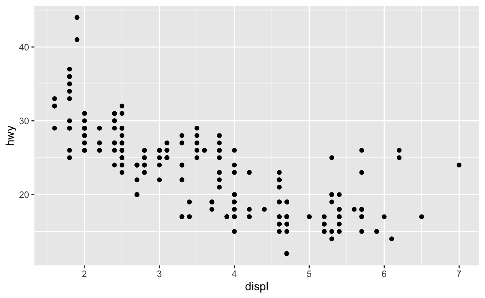

Welcome
Data Visualization is a useful tool because it makes data accessible to your visual system, which can process large amounts of information quickly. However, two characteristics of data can short circuit this system. Data can not be easily visualized if
- Data points are all rounded to the same values.
- The data contains so many points that they occlude each other.
These features both create overplotting, the condition where multiple geoms in the plot are plotted on top of each other, hiding each other. This tutorial will show you several strategies for dealing with overplotting, introducing new geoms along the way.
The tutorial is adapted from R for Data Science by Hadley Wickham and Garrett Grolemund, published by O’Reilly Media, Inc., 2016, ISBN: 9781491910399. You can purchase the book at shop.oreilly.com.
The tutorial uses the ggplot2 and hexbin packages, which have been pre-loaded for your convenience.
Overplotting
What is overplotting?
You’ve seen this plot several times in previous tutorials, but have you noticed that it only displays 126 points? This is unusual because the plot visualizes a data set that contains 234 points.

The missing points are hidden behind other points, a phenomenon known as overplotting. Overplotting is a problem because it provides an incomplete picture of the dataset. You cannot determine where the mass of the points fall, which makes it difficult to spot relationships in the data.
Causes of overplotting
Overplotting usually occurs for two different reasons:
- The data points have been rounded to a “grid” of common values, as in the plot above
- The dataset is so large that it cannot be plotted without points overlapping each other
How you deal with overplotting will depend on the cause.
Rounding
Overplotting due to rounding
If your overplotting is due to rounding, you can obtain a better picture of the data by making each point semi-transparent. For example you could set the alpha aesthetic of the plot below to a value less than one, which will make the points transparent.
Try this now. Set the points to an alpha of 0.25, which will make each point 25% opague (i.e. four points staked on top of each other will create a solid black).
ggplot(data = mpg) +
geom_point(mapping = aes(x = displ, y = hwy))ggplot(data = mpg) +
geom_point(mapping = aes(x = displ, y = hwy), alpha = 0.25)Adjust the position
A second strategy for dealing with rounding is to adjust the position
of each point. position = "jitter" adds a small amount of
random noise to the location of each point. Since the noise is random,
it is unlikely that two points rounded to the same location will also be
jittered to the same location.
The result is a jittered plot that displays more of the data. Jittering comes with both limitations and benefits. You cannot use a jittered plot to see the local values of the points, but you can use a jittered plot to perceive the global relationship between the variables, something that is hard to do in the presence of overplotting.
Review - jitter
In the Scatterplots tutorial, you learned of a geom
that displays the equivalent of geom_point() with a
position = "jitter" adjustment.
Rewrite the code below to use that geom. Do you obtain similar results?
ggplot(data = mpg) +
geom_point(mapping = aes(x = displ, y = hwy), position = "jitter")ggplot(data = mpg) +
geom_jitter(mapping = aes(x = displ, y = hwy))Large data
Overplotting due to large data
A dataset does not need to be truly “Big Data” to be hard to visualize. The diamonds data set contains less than 54,000 points, but it still suffers from overplotting when you try to plot carat vs. price. Here the bulk of the points fall on top of each other in an impenetrable cloud of blackness.
Strategies for large data
Alpha and jittering are less useful for large data. Jittering will not separate the points, and a mass of transparent points can still look black.
A better way to deal with overplotting due to large data is to
visualize a summary of the data. In fact, we’ve already worked with this
dataset by using geoms that naturally summarise the data, like
geom_histogram() and geom_smooth().
Let’s look at several other geoms that you can use to summarise relationships in large data.
Review - Boxplots with continuous variables
Boxplots efficiently summarise data, which make them a useful tool
for large data sets. In the boxplots tutorial, you
learned how to use cut_width() and the group aesthetic to
plot multiple boxplots for a continuous variable.
Modify the code below to cut the carat axis into intervals with width
0.2. Then set the group aesthetic of geom_boxplot() to the
result.
ggplot(data = diamonds) +
geom_boxplot(mapping = aes(x = carat, y = price))ggplot(data = diamonds) +
geom_boxplot(mapping = aes(x = carat, y = price, group = cut_width(carat, width = 0.2)))geom_bin2d()
geom_bin2d() provides a new way to summarise two
dimensional continuous relationships. You can think of bin2d as working
like a three dimensional histogram. It divides the Cartesian field into
small rectangular bins, like a checkerboard. It then counts how many
points fall into each bin, and maps the count to color. Bins that
contain no points are left blank.
By studying the results, we can see that the mass of points falls in the bottom left of the graph.
Exercise - binwidths
Like histograms, bin2d use bins and
binwidth arguments. Each should be set to a vector of two
numbers: one for the number of bins (or binwidths) to use on the x axis,
and one for the number of bins (or binwidths) to use on the y axis.
Use one of these parameters to modify the graph below to use 40 bins on the x axis and 50 on the y axis.
ggplot(data = diamonds) +
geom_bin2d(mapping = aes(x = carat, y = price))ggplot(data = diamonds) +
geom_bin2d(mapping = aes(x = carat, y = price), bins = c(40, 50))Exercise - geom_hex()
Our eyes are drawn to straight vertical and horizontal lines, which makes it easy to perceive “edges” in a bin2d that are not necessarily there (the rectangular bins naturally form edges that span the breadth of the graph).
One way to avoid this, if you like, is to use
geom_hex(). geom_hex() functions like
geom_bin2d() but uses hexagonal bins. Adjust the graph
below to use geom_hex().
ggplot(data = diamonds) +
geom_bin2d(mapping = aes(x = carat, y = price))ggplot(data = diamonds) +
geom_hex(mapping = aes(x = carat, y = price))geom_density2d()
geom_density2d() provides one last way to summarize a
two dimensional continuous relationship. Think of density2d as the two
dimensional analog of density. Instead of drawing a line that rises and
falls on the y dimension, it draws a field over the coordinate axes that
rises and falls on the z dimension, that’s the dimension that points
straight out of the graph towards you.
The result is similar to a mountain that you are looking straight down upon. The high places on the mountain show where the most points fall and the low places show where the fewest points fall. To visualize this mountain, density2d draws contour lines that connect areas with the same “height”, just like a contour map draws elevation.
Here we see the “ridge” of points that occur at low values of carat and price.
Expand limits
By default, density2d zooms in on the region that contains density
lines. This may not be the same region spanned by the data points. If
you like, you can re-expand the graph to the region spanned by the price
and carat variables with expand_limits().
expand_limits() zooms the x and y axes to the fit the
range of any two variables (they need not be the original x and y
variables).
Exercise - density2d
Often density2d plots are easiest to read when you plot them on top of the original data. In the chunk below create a plot of diamond carat size vs. price. The plot should contain density2d lines superimposed on top of the raw points. Make the raw points transparent with an alpha of 0.1.
ggplot(data = diamonds, mapping = aes(x = carat, y = price)) +
geom_point(alpha = 0.1) +
geom_density2d()Recap
Overplotting is a common phenomenon in plots because the causes of overplotting area common phenomenon in data sets. Data sets often
- round values to a common set of values, or
- are too big to visualize easily without overplotting
When overplotting results from rounding errors, you can work around it by manipulating the transparency or location of the points.
For larger datasets you can use geoms that summarise the data to display relationships without overplotting. This is an effective tactic for truly big data as well, and it also works for the first case of overplotting due to rounding.
One final tactic is to sample your data to create a sample data set that is small enough to visualize without overplotting.
You’ve now learned a complete toolkit for exploring data visually. The final tutorial in this primer will show you how to polish the plots you make for publication. Instead of learning how to visualize data, you will learn how to add titles and captions, customize color schemes and more.